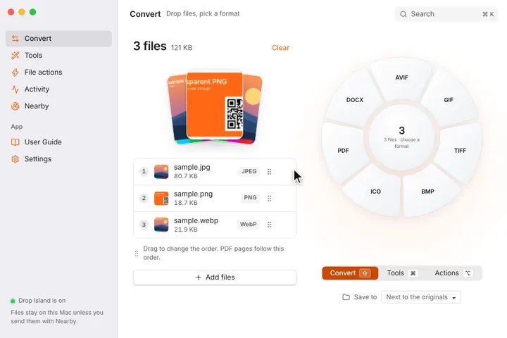
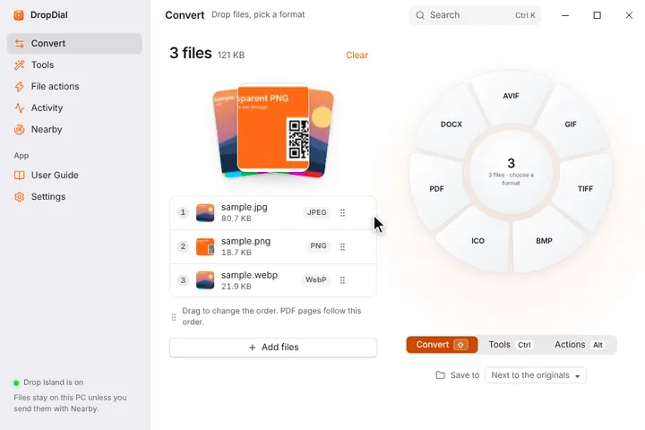

Add files
Drag files in, or choose them. DropDial shows what you can do with them.


- Drag one or more files from Finder onto the DropDial window.Drag one or more files from File Explorer onto the DropDial window.
- Or click Choose Files… (or press ⌘O) and pick them.Or click Choose Files… (or press Ctrl+O) and pick them.
- Your files appear on the left. Click × on a file to remove it, or Clear to start again.
- With several files, drag a row up or down to change the order (or press ⌥ ↑/↓). A PDF made from images follows this order.With several files, drag a row up or down to change the order (or press Alt ↑/↓). A PDF made from images follows this order.
Tips
- A new drop replaces the selection. Hold ⌥ while dropping to add to it instead.A new drop replaces the selection. Hold Alt while dropping to add to it instead.
- Click Add files to add more without removing the ones you have.